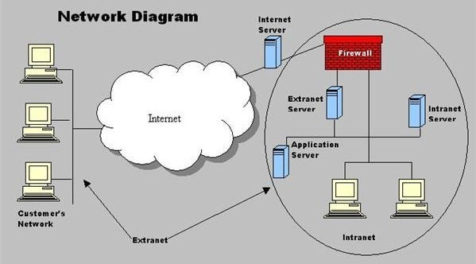

Extranet
An extranet is a private network that allows authorized users from outside an organization to access specific resources or information.
It is a secure extension of an intranet, which is an internal network used by an organization for communication
and collaboration among its employees. Extranets are typically used to facilitate communication
and collaboration with external partners, suppliers, customers or other stakeholders while
maintaining control over the shared information. They can be accessed through a web
browser using secure login credentials and may include features such as file
sharing, messaging, project management tools and access to
specific applications or databases.
Advantages of Extranets
- Improved Collaboration: Extranets facilitate seamless communication and collaboration between an organization and its external partners, suppliers or customers.
- Enhanced Security: Extranets provide a secure environment for sharing sensitive information with authorized users outside the organization.
- Increased Efficiency: They can streamline business processes by allowing external stakeholders to access relevant information and resources directly.
- Cost-Effective: Extranets can reduce the costs associated with traditional communication methods such as phone calls, emails and physical meetings.
Disadvantages of Extranets
- Security Risks: Extranets can pose security risks if not properly managed, as they allow external users to access sensitive information.
- Complexity: Setting up and maintaining an extranet can be complex and may require significant resources and expertise.
- Limited Control: Organizations may have limited control over the external users accessing the extranet, which can lead to potential misuse or unauthorized access.
- Dependence on Technology: Extranets rely on technology, and any technical issues can disrupt communication and access to information for external stakeholders.
